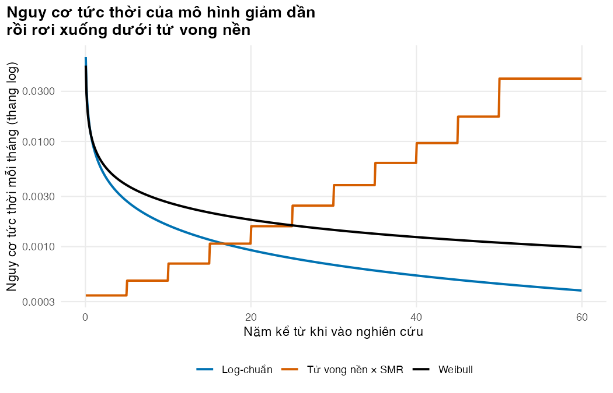
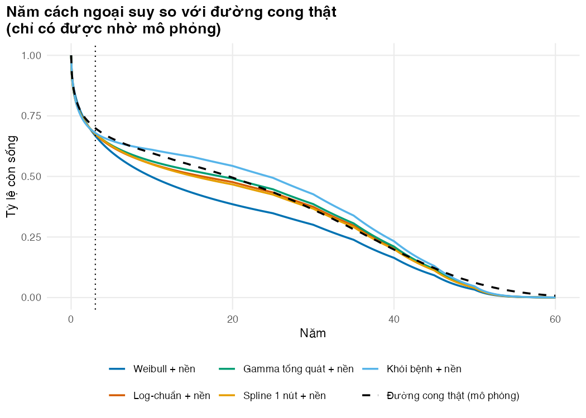

if (!isTRUE(l10n_info()[["UTF-8"]])) invisible(Sys.setlocale("LC_CTYPE", "en_US.UTF-8"))
source("../_shared/R/helpers.R")
source("../_shared/R/vn_data.R") # course-wide context, unit prices and life table
source("code/model.R")
suppressPackageStartupMessages({
library(ggplot2)
library(survival)
library(flexsurv)
})
ps <- read_params("params/sim_truth.csv")
pm <- read_params("params/model_inputs.csv")
cfg <- read_params("params/lesson_settings.csv")
ctx <- vn_context() # course-wide: discount rate, threshold, exchange rate, wages
pr <- vn_prices() # course-wide unit prices (BHYT fees, tests, ART, bed-days)
inp <- build_inputs(pm, ctx, pr) # decision-model inputs: module values + shared values and prices
lt <- vn_lifetable("both") # WHO life table, Viet Nam 2023, both sexes
trial <- simulate_trial(ps, lt, seed = SEED_TRIAL)
d_soc <- endpoint_data(trial, "os", "soc")
n_months <- pm$horizon_years * 12
months <- 0:n_months
fits <- fit_dists(d_soc, c("weibull", "llogis", "lnorm", "gengamma"))Bài 3: Ngoại suy sống còn
Thêm tử vong nền, dùng spline và mô hình khỏi bệnh, rồi kiểm tra ngoại suy với đường cong thật
Vì sao bạn nên quan tâm?
Một người bệnh 35 tuổi ở An Giang vừa hoàn thành 6 tháng điều trị lao và tiếp tục uống ARV ở phòng khám ngoại trú. Theo bảng sống WHO 2023, một người Việt Nam 35 tuổi còn trung bình 41.9 năm để sống (World Health Organization 2026); người đang điều trị ARV có tỷ suất tử vong cao hơn khoảng 2.2 lần, nên còn khoảng 34.0 năm. Thử nghiệm chỉ theo dõi 36 tháng, vậy mà với mô hình log-chuẩn có tử vong nền, 89% số năm sống của nhánh chăm sóc chuẩn nằm sau mốc đó. Mỗi năm ARV chỉ tốn khoảng 800,000 VNĐ tiền thuốc (The Global Fund 2026), nhưng nhân với 18 năm sống nằm ngoài dữ liệu thì riêng tiền thuốc đã khoảng 15,000,000 VNĐ mỗi người (chưa chiết khấu), bằng khoảng 3 tháng lương tối thiểu vùng I (Chính phủ 2025). Bài này giúp bạn chọn cách ngoại suy và kiểm tra nó với bảng sống và dữ liệu ngoài.
Mục tiêu học tập
Sau bài này, bạn có thể:
- Kết hợp đường cong đã khớp với tử vong nền từ bảng sống và tỷ số tử vong chuẩn hóa (SMR).
- Khớp spline Royston–Parmar, và mô hình khỏi bệnh có tử vong nền bằng
optim(). - Đánh giá ngoại suy bằng dữ liệu ngoài.
- Tách sai số mẫu khỏi sai số cấu trúc khi so với đường cong thật.
Ý chính
- Phần lớn năm sống nằm sau thời gian theo dõi, nên ngoại suy là quyết định mô hình hóa quan trọng nhất.
- Nguy cơ của đoàn hệ không được thấp hơn tử vong nền: mỗi tháng lấy max(nguy cơ mô hình, nguy cơ nền × SMR).
- Spline Royston–Parmar ngoại suy như Weibull sau nút cuối. Mô hình khỏi bệnh hợp với nguy cơ cao lúc đầu rồi về mức nền, nhưng tỷ lệ khỏi bệnh khó ước lượng.
- Một thử nghiệm là một lần rút mẫu: chênh lệch với đường cong thật gồm sai số mẫu cộng sai số cấu trúc.
- Không phương pháp nào luôn đúng: dùng dữ liệu ngoài và chuyên gia để loại ngoại suy phi lý.
Nội dung
Ngoại suy quyết định kết quả
Với log-chuẩn có tử vong nền, 89% thời gian sống trung bình giới hạn (RMST) của nhánh chăm sóc chuẩn nằm sau tháng 36, tức ngoài dữ liệu. Vì dữ liệu là mô phỏng, ta có thứ thực tế không bao giờ có: đường cong thật, tính từ một đoàn hệ mô phỏng lớn không bị kiểm duyệt. Nó cho thấy ngay rằng thử nghiệm 300 người mỗi nhánh có sai số mẫu trước khi ta khớp mô hình nào: ở tháng 33, KM là 0.687, thấp hơn giá trị thật 0.706, và KTC 95% chứa giá trị thật ở các mốc kiểm tra.
Tử vong nền và SMR
Gọi \(\mu(a)\) là tỷ suất tử vong năm ở tuổi \(a\) và \(a_0\) = 35 là tuổi khởi đầu. \(\mu(a)\) lấy từ bảng sống WHO 2023 của Việt Nam, hai giới, dùng chung cho cả khóa học (World Health Organization 2026). Trên lưới tháng của mô hình, bảng này cho người 35 tuổi kỳ vọng sống còn lại 41.8 năm (bảng WHO: 41.9 năm; mô hình dừng ở 95 tuổi). Người bắt đầu điều trị ARV (ART) ở nước thu nhập thấp-trung bình vẫn có tuổi thọ thấp hơn người không nhiễm HIV cùng tuổi và giới (Johnson và c.s. 2013), nên cần tỷ số tử vong chuẩn hóa (SMR). Trong đoàn hệ TREAT Asia, có cơ sở ở Hà Nội, người đã điều trị ARV trên 5 năm tử vong 0.56 trên 100 người-năm (Bijker và c.s. 2020); chia cho tỷ suất tử vong chung của Việt Nam ở tuổi 40 cho SMR ≈ 2.2. Với SMR = 2.2, kỳ vọng sống còn lại giảm xuống 34.0 năm. Hai cách kết hợp:
- Sàn nguy cơ (dùng trong bài): với \(t\) tính bằng tháng, \(h(t) = \max\{h_{\text{mô hình}}(t),\ \text{SMR}\cdot\mu(a_0 + t/12)/12\}\). Mô hình khớp trên tử vong mọi nguyên nhân đã chứa tử vong nền trong thời gian theo dõi, nên lấy max để không đếm hai lần.
- Sống còn tương đối (relative survival): \(S(t) = S^*(t)\cdot R(t)\), cần nguy cơ nền của từng người khi khớp (Lambert và c.s. 2007).
Nguy cơ của Weibull rơi xuống dưới mức nền sau khoảng 25 năm, của log-chuẩn sau khoảng 17 năm. Sàn nguy cơ đưa RMST của log-chuẩn từ 28.0 xuống 20.0 năm. SMR của mô hình ở đây bằng SMR thật của mô phỏng, trên cùng bảng sống, nên các mô hình có nền được lợi thế (Bài tập 1 đổi SMR).
Spline Royston–Parmar
Mô hình này coi log nguy cơ tích lũy là spline bậc ba tự nhiên của log thời gian, \(\log H(t) = s(\log t;\gamma)\) với \(k\) nút bên trong (Royston và Parmar 2002). Với \(k = 0\) nó là Weibull. Spline tự nhiên tuyến tính ở hai đầu, nên sau nút ngoài cùng phần ngoại suy lại là một Weibull (Latimer và Adler 2022). AIC của mô hình 1, 2, 3 nút là 882.4, 884.2, 886.1, không tốt hơn log-chuẩn (880.5). Spline hữu ích khi nguy cơ có hình dạng phức tạp (Rutherford và c.s. 2020).
Mô hình hỗn hợp khỏi bệnh
Trong dữ liệu mô phỏng, tử vong dồn vào những tháng đầu; người qua được giai đoạn đó có nguy cơ gần mức nền. Mô hình hỗn hợp khỏi bệnh (mixture cure model) mô tả đúng ý này (Othus và c.s. 2012; Lambert và c.s. 2007):
\[ S(t) = S^*(t)\,\big[\pi + (1-\pi)\,S_u(t)\big], \]
với \(\pi\) là tỷ lệ khỏi bệnh (cure fraction), \(S^*\) là sống còn nền (bảng sống × SMR), \(S_u\) là sống còn Weibull của nhóm chưa khỏi. Người \(i\) đóng góp \(d_i \log\{h^*_i + h_r(t_i)\} + \log R(t_i) - H^*_i\) vào log hàm hợp lý, với \(R = \pi + (1-\pi)S_u\), \(h_r = -\tfrac{d}{dt}\log R\) và \(H^*_i\) là nguy cơ nền tích lũy trong thời gian theo dõi. \(H^*_i\) không chứa tham số nên optim() bỏ qua được, nhưng phải cộng lại khi báo cáo log-likelihood và AIC; thiếu nó, AIC không so được với AIC của flexsurv.
Tỷ lệ khỏi bệnh ước lượng là 0.63 (KTC 95%: 0.51–0.74); nhóm nguy cơ thấp thật chiếm 72%, nằm trong khoảng này. AIC đầy đủ của mô hình khỏi bệnh là 883.8 so với 880.5 của log-chuẩn, tức không tốt hơn. Bỏ tử vong nền thì đường cong đi ngang mãi, RMST lên tới 37.7 năm.
So với đường cong thật và với dữ liệu ngoài
RMST thật (cùng giới hạn 60 năm) là 20.9 năm. Ở thử nghiệm này, gần nhất là “Gamma tổng quát + nền”; Weibull có nền thấp hơn thật 3.5 năm, mô hình khỏi bệnh có nền cao hơn thật 1.2 năm, còn hai mô hình bỏ qua tử vong nền sai nhiều nhất.
Đó mới là một lần rút mẫu. Lặp lại trên 100 thử nghiệm mới, sai số trung bình (phần cấu trúc) là -2.5 năm với Weibull, 0.0 với log-chuẩn, -0.6 với spline và 1.3 với mô hình khỏi bệnh (đều có nền). Sai số từng thử nghiệm thì rộng: log-chuẩn từ -4.1 tới 2.7 năm, tỷ lệ khỏi bệnh ước lượng từ 0.01 tới 0.75 (thật 0.72). Thứ hạng ở một thử nghiệm vì vậy phụ thuộc cả cơ chế sinh dữ liệu lẫn mẫu ngẫu nhiên; bài học là quy trình, không phải một phân phối “luôn đúng”.
Thực tế chỉ có dữ liệu ngoài. Một phân tích gộp ước tính người bắt đầu ART ở tuổi 35 tại các nước thu nhập thấp-trung bình sống thêm 25.6 (KTC 95%: 22.1–29.2) năm (Teeraananchai và c.s. 2017). Tuổi khởi đầu trùng với đoàn hệ của module, nhưng quần thể đó nhẹ hơn (không phải ai cũng mắc lao hay có CD4 thấp), nên chỉ là mức trần thô; RMST bị cắt ở 60 năm còn làm phép kiểm dễ qua hơn. Chỉ “Khỏi bệnh, bỏ qua nền” vượt cận trên. “Log-chuẩn, bỏ qua nền” sai 7.1 năm so với đường cong thật mà vẫn thấp hơn cận trên 1.2 năm: một mức trần chỉ loại được những ngoại suy phi lý nhất. Jackson và c.s. (2017) tổng quan cách đưa dữ liệu ngoài vào ngoại suy. Quy trình gọn (Latimer 2013; Latimer và Adler 2022): khớp nhiều mô hình; thêm tử vong nền có SMR; so với dữ liệu ngoài và ý kiến chuyên gia về tỷ lệ sống ở 5, 10, 20 năm; chọn phân tích cơ sở và giữ các mô hình hợp lý khác cho kịch bản.
Thực hành
Nạp hàm, tham số, thử nghiệm và khớp bốn phân phối của Bài 2 cho nhánh chuẩn, khung 720 tháng.
So KM với đường cong thật ở ba mốc; truth_in_ci cho biết giá trị thật có nằm trong KTC 95% của KM không.
# The simulation lets us compute the TRUE survival curve of standard care: a very large
# uncensored cohort with the trial's age mix. Compare the Kaplan-Meier curve of our one
# 300-person trial with it: the gap is sampling error, before any model is fitted.
truth <- true_curves(ps, lt, n_months, seed = SEED_TRUTH)
S_true <- truth$os[truth$arm == "soc"]
km_soc <- km_by_hand(d_soc$time, d_soc$status)
check_months <- c(12, 24, ps$study_months - 3) # month 33 still has enough people at risk
sf_soc <- summary(survfit(Surv(time, status) ~ 1, data = d_soc), times = check_months)
km_vs_truth <- data.frame(month = check_months, n_risk = sf_soc$n.risk, KM = sf_soc$surv,
lower = sf_soc$lower, upper = sf_soc$upper, truth = S_true[check_months + 1])
km_vs_truth$gap <- km_vs_truth$KM - km_vs_truth$truth
km_vs_truth$truth_in_ci <- km_vs_truth$truth >= km_vs_truth$lower & km_vs_truth$truth <= km_vs_truth$upper
round(km_vs_truth, 3) month n_risk KM lower upper truth gap truth_in_ci
1 12 227 0.766 0.719 0.815 0.782 -0.016 1
2 24 204 0.714 0.665 0.768 0.731 -0.017 1
3 33 51 0.687 0.633 0.745 0.706 -0.019 1# Check: my KM at these months equals the hand-written one
stopifnot(all(abs(km_vs_truth$KM - km_at(km_soc, check_months)) < 1e-12))Kiểm tra bảng sống dùng chung (hàm bậc thang của module trùng vn_mx()), tính lại SMR từ tỷ suất tử vong đã công bố, so kỳ vọng sống trên lưới tháng với cột ex của WHO, rồi tính nguy cơ nền mỗi tháng và năm mà nguy cơ mô hình rơi dưới mức nền.
# Background mortality = the WHO life table for Viet Nam (2023, both sexes). Check that the
# model's step function gives exactly the shared vn_mx() rates at every adult age
stopifnot(all(abs(mx_at(18:100, lt) - vn_mx(18:100)) < 1e-12))
# SMR: published death rate after 5 years on ART (Asian cohort) / Vietnamese rate at that age
smr_derived <- smr_from_rate(pm$mort_lt_art, pm$age_cohort + pm$smr_ref_years, lt)
c(mx_ref_age = mx_at(pm$age_cohort + pm$smr_ref_years, lt), smr_derived = smr_derived, smr_csv = pm$smr_bg) mx_ref_age smr_derived smr_csv
0.002590167 2.162022758 2.200000000 stopifnot(abs(smr_derived - pm$smr_bg) < 0.1, pm$smr_bg == ps$smr_true)
# Background hazard for the model cohort (age_cohort at entry), general population x SMR
h_pop <- bg_hazard_monthly(pm$age_cohort, n_months, lt, smr = 1)
h_bg <- bg_hazard_monthly(pm$age_cohort, n_months, lt, smr = pm$smr_bg)
S_bg <- bg_surv(pm$age_cohort, n_months, lt, smr = pm$smr_bg)
le_pop <- auc_trapezoid(months, bg_surv(pm$age_cohort, n_months, lt, 1)) / 12
le_bg <- auc_trapezoid(months, S_bg) / 12
c(life_expectancy_population = le_pop, who_ex_at_age = lt$ex[lt$age == pm$age_cohort], life_expectancy_smr = le_bg)life_expectancy_population who_ex_at_age
41.76014 41.90334
life_expectancy_smr
34.00609 # Check: without SMR the model grid reproduces the WHO remaining life expectancy at that age
# (within a year; the horizon stops at age_cohort + horizon_years)
stopifnot(pm$age_cohort %in% lt$age, abs(le_pop - lt$ex[lt$age == pm$age_cohort]) < 1)
# Monthly hazards of two fits against the background: where do they cross?
mid <- months[-1] - 0.5
hz_cmp <- rbind(
data.frame(year = mid / 12, hazard = fit_curve(fits$weibull, mid, "hazard"), curve = "Weibull"),
data.frame(year = mid / 12, hazard = fit_curve(fits$lnorm, mid, "hazard"), curve = "Log-chuẩn"),
data.frame(year = mid / 12, hazard = h_bg, curve = "Tử vong nền × SMR")
)
cross_year <- c(
weibull = mid[which(fit_curve(fits$weibull, mid, "hazard") < h_bg)[1]] / 12,
lnorm = mid[which(fit_curve(fits$lnorm, mid, "hazard") < h_bg)[1]] / 12
)
cross_year weibull lnorm
25.04167 16.70833 stopifnot(!anyNA(cross_year)) # prose claim: both fitted hazards eventually fall below background
fig_bg <- ggplot(hz_cmp, aes(year, hazard, colour = curve)) +
geom_line(linewidth = 0.9) +
scale_y_log10(breaks = c(0.0003, 0.001, 0.003, 0.01, 0.03),
labels = scales::label_number(accuracy = 0.0001, big.mark = ",", decimal.mark = ".")) +
scale_colour_manual(values = pal_course[c(1, 2, 8)], name = NULL) +
labs(x = "Năm kể từ khi vào nghiên cứu", y = "Nguy cơ tức thời mỗi tháng (thang log)",
title = "Nguy cơ tức thời của mô hình giảm dần\nrồi rơi xuống dưới tử vong nền") +
theme_course()
save_fig(fig_bg, "l03-background.png")
Áp sàn nguy cơ bằng add_bg_max(). Kiểm tra: mỗi tháng đường mới mất ít nhất bằng nguy cơ nền.
# Apply the floor: month by month, hazard = max(fitted hazard, background hazard)
bg_tab <- data.frame(dist = names(fits), label = DIST_LABELS[names(fits)],
rmst_no_bg = NA, rmst_with_bg = NA)
curves_bg <- list()
for (i in seq_along(fits)) {
S <- fit_curve(fits[[i]], months)
S_adj <- add_bg_max(S, h_bg)
# Check: in every month the floored curve loses at least the background hazard
stopifnot(all(-diff(log(S_adj)) >= h_bg - 1e-12))
bg_tab$rmst_no_bg[i] <- auc_trapezoid(months, S) / 12
bg_tab$rmst_with_bg[i] <- auc_trapezoid(months, S_adj) / 12
curves_bg[[names(fits)[i]]] <- S_adj
}
bg_tab[, -1] label rmst_no_bg rmst_with_bg
weibull Weibull 21.79469 17.39025
llogis Log-logistic 25.64979 18.89816
lnorm Log-chuẩn 27.99247 20.00743
gengamma Gamma tổng quát 29.14381 20.44959# Share of the log-normal restricted mean that lies beyond the follow-up
share_beyond <- 1 - auc_trapezoid(0:ps$study_months, curves_bg$lnorm[1:(ps$study_months + 1)]) /
auc_trapezoid(months, curves_bg$lnorm)
share_beyond[1] 0.886647stopifnot(share_beyond > 0.5) # prose claim: most of the life-years lie beyond the follow-upKhớp spline 1, 2, 3 nút. Kiểm tra: spline 0 nút trùng Weibull.
# Royston-Parmar models: natural cubic spline for log cumulative hazard in log time
# k = number of internal knots (placed at quantiles of the log event times)
splines <- list()
for (k in 1:3) {
splines[[paste0("k", k)]] <- flexsurvspline(Surv(time, status) ~ 1, data = d_soc,
k = k, scale = "hazard")
}
sp_tab <- data.frame(model = names(splines), n_par = NA, AIC = NA, rmst_no_bg = NA, rmst_with_bg = NA)
for (i in seq_along(splines)) {
S <- fit_curve(splines[[i]], months)
sp_tab$n_par[i] <- splines[[i]]$npars
sp_tab$AIC[i] <- splines[[i]]$AIC
sp_tab$rmst_no_bg[i] <- auc_trapezoid(months, S) / 12
sp_tab$rmst_with_bg[i] <- auc_trapezoid(months, add_bg_max(S, h_bg)) / 12
}
sp_tab model n_par AIC rmst_no_bg rmst_with_bg
1 k1 3 882.3506 26.89721 19.78101
2 k2 4 884.1682 28.00896 20.26152
3 k3 5 886.1361 27.29622 19.95827# Knot positions (in months) of the 1-knot model
exp(splines$k1$knots) 50%
0.002645109 3.937968059 34.956052050 stopifnot(min(sp_tab$AIC) > fits$lnorm$AIC) # prose claim: no spline beats the log-normal on AIC
# Sanity check: with k = 0 the spline model is exactly a Weibull (same log-likelihood)
sp0 <- flexsurvspline(Surv(time, status) ~ 1, data = d_soc, k = 0, scale = "hazard")
stopifnot(abs(sp0$loglik - fits$weibull$loglik) < 1e-4)Khớp mô hình khỏi bệnh có và không có nền. Kiểm tra: tích phân nguy cơ nền khớp tổng theo tháng; bỏ nền thì mô hình chứa Weibull nên log-likelihood không thấp hơn. In AIC cạnh các mô hình khác.
# Mixture cure model with background mortality (SMR applied), fitted by our own likelihood.
# Each person's background hazard is taken at their own age at exit (h_event), and the
# cumulative background hazard over their follow-up (H_event) puts the likelihood on the
# same all-cause scale as flexsurv, so the AIC can be compared with the AIC of the fits.
h_event <- pm$smr_bg * mx_at(d_soc$age + d_soc$time / 12, lt) / 12
H_event <- cum_bg_hazard(d_soc$age, d_soc$time, lt, pm$smr_bg)
# Check: the exact integral agrees with summing the monthly hazards of the model grid
stopifnot(abs(cum_bg_hazard(pm$age_cohort, 120, lt, pm$smr_bg) -
sum(bg_hazard_monthly(pm$age_cohort, 120, lt, pm$smr_bg))) < 1e-10)
cure_fit <- fit_cure_weibull(d_soc$time, d_soc$status, h_event, H_event)
cure_fit[c("cure", "shape", "scale", "loglik", "AIC")]$cure
[1] 0.6332211
$shape
[1] 0.5857057
$scale
[1] 12.01789
$loglik
[1] -438.9071
$AIC
[1] 883.8142# 95% CI for the cure fraction (on the logit scale, then back-transformed)
cure_ci <- plogis(cure_fit$par[1] + c(-1, 1) * 1.96 * cure_fit$se[1])
cure_ci[1] 0.5066146 0.7437708# Same model ignoring background mortality (h = 0): the plateau is then flat for ever
zeros <- rep(0, nrow(d_soc))
cure_nobg <- fit_cure_weibull(d_soc$time, d_soc$status, zeros, zeros)
S_cure <- cure_surv(cure_fit, months, S_bg)
S_cure_nobg <- cure_surv(cure_nobg, months, rep(1, length(months)))
c(cure_with_bg = cure_fit$cure, cure_no_bg = cure_nobg$cure)cure_with_bg cure_no_bg
0.6332211 0.6170096 # Check 1: without background the cure model contains the Weibull (cure fraction -> 0),
# so its maximised log-likelihood cannot be lower than flexsurv's Weibull
stopifnot(cure_nobg$loglik >= fits$weibull$loglik - 1e-3)
# Check 2: AIC on one scale. The cure model has 3 parameters; compare with the fits
aic_cmp <- c(cure = cure_fit$AIC, lnorm = fits$lnorm$AIC, gengamma = fits$gengamma$AIC, weibull = fits$weibull$AIC)
round(aic_cmp, 1) cure lnorm gengamma weibull
883.8 880.5 882.3 885.1 stopifnot(cure_fit$cure > 0, cure_fit$cure < 1, all(diff(S_cure) <= 1e-12))So mọi ngoại suy với đường cong thật (tỷ lệ sống 5, 10, 20 năm, RMST, sai số), kèm đường cong thật cho đoàn hệ đúng 35 tuổi.
# All candidate extrapolations against the simulated truth (standard-care arm)
cands <- list(
"Weibull + nền" = curves_bg$weibull,
"Log-chuẩn + nền" = curves_bg$lnorm,
"Gamma tổng quát + nền" = curves_bg$gengamma,
"Spline 1 nút + nền" = add_bg_max(fit_curve(splines$k1, months), h_bg),
"Khỏi bệnh + nền" = S_cure,
"Khỏi bệnh, bỏ qua nền" = S_cure_nobg,
"Log-chuẩn, bỏ qua nền" = fit_curve(fits$lnorm, months)
)
cmp <- data.frame(model = names(cands), S_5y = NA, S_10y = NA, S_20y = NA, rmst_horizon = NA)
for (i in seq_along(cands)) {
S <- cands[[i]]
cmp$S_5y[i] <- S[61]
cmp$S_10y[i] <- S[121]
cmp$S_20y[i] <- S[241]
cmp$rmst_horizon[i] <- auc_trapezoid(months, S) / 12
}
true_mean <- auc_trapezoid(months, S_true) / 12 # restricted to the horizon, like the models
cmp <- rbind(cmp, data.frame(model = "Đường cong thật (mô phỏng)", S_5y = S_true[61],
S_10y = S_true[121], S_20y = S_true[241], rmst_horizon = true_mean))
cmp$error_years <- cmp$rmst_horizon - true_mean
cmp_raw <- cmp # unrounded, for the checks below
cmp[, -1] <- round(cmp[, -1], 3)
cmp model S_5y S_10y S_20y rmst_horizon error_years
1 Weibull + nền 0.601 0.498 0.385 17.390 -3.530
2 Log-chuẩn + nền 0.623 0.552 0.477 20.007 -0.912
3 Gamma tổng quát + nền 0.629 0.563 0.491 20.450 -0.470
4 Spline 1 nút + nền 0.626 0.550 0.467 19.781 -1.139
5 Khỏi bệnh + nền 0.648 0.610 0.544 22.095 1.175
6 Khỏi bệnh, bỏ qua nền 0.651 0.627 0.619 37.676 16.756
7 Log-chuẩn, bỏ qua nền 0.623 0.552 0.478 27.992 7.073
8 Đường cong thật (mô phỏng) 0.658 0.597 0.495 20.920 0.000best_model <- cmp$model[which.min(abs(cmp$error_years[-nrow(cmp)]))]
# Prose claim: the two models that ignore background mortality are the two worst
err_abs <- abs(cmp_raw$error_years[-nrow(cmp_raw)])
worst_two <- cmp_raw$model[-nrow(cmp_raw)][order(-err_abs)][1:2]
stopifnot(all(worst_two %in% c("Khỏi bệnh, bỏ qua nền", "Log-chuẩn, bỏ qua nền")))
# The truth for a cohort that is exactly age_mean years old (the age the models use), to see
# how much the age mix of the trial matters
ps_fixed <- ps
ps_fixed$age_sd <- 0
truth_fixed <- true_curves(ps_fixed, lt, n_months, seed = SEED_TRUTH)
true_mean_fixed <- auc_trapezoid(months, truth_fixed$os[truth_fixed$arm == "soc"]) / 12
c(age_mix = true_mean, fixed_age = true_mean_fixed) age_mix fixed_age
20.91991 20.96039 plot_df <- list()
for (nm in names(cands)[1:5]) plot_df[[nm]] <- data.frame(year = months / 12, S = cands[[nm]], model = nm)
plot_df[["truth"]] <- data.frame(year = months / 12, S = S_true, model = "Đường cong thật (mô phỏng)")
plot_df <- do.call(rbind, plot_df)
plot_df$model <- factor(plot_df$model, levels = c(names(cands)[1:5], "Đường cong thật (mô phỏng)"))
fig_cmp <- ggplot(plot_df, aes(year, S, colour = model, linetype = model)) +
geom_line(linewidth = 0.8) +
geom_vline(xintercept = ps$study_months / 12, linetype = 3) +
scale_colour_manual(values = c(pal_course[1:5], "black"), name = NULL) +
scale_linetype_manual(values = c(rep(1, 5), 2), name = NULL) +
labs(x = "Năm", y = "Tỷ lệ còn sống",
title = "Năm cách ngoại suy so với đường cong thật\n(chỉ có được nhờ mô phỏng)") +
theme_course() +
guides(colour = guide_legend(nrow = 2))
save_fig(fig_cmp, "l03-compare.png", height = 5)
Lặp lại việc khớp trên các thử nghiệm mới: trung bình là phần cấu trúc, khoảng min–max là ảnh hưởng của mẫu.
# One trial gives one draw of the sampling error. Repeat the whole analysis on n_rep NEW
# trials from the same true world (seeds SEED_REP + 1, 2, ...): the mean error is the
# systematic (structural) part, the range shows how far one trial can be from it.
seeds <- SEED_REP + seq_len(cfg$n_rep)
mod_names <- c("Weibull + nền", "Log-chuẩn + nền", "Gamma tổng quát + nền", "Spline 1 nút + nền", "Khỏi bệnh + nền")
err_rep <- matrix(NA_real_, length(seeds), length(mod_names), dimnames = list(NULL, mod_names))
cure_rep <- rep(NA_real_, length(seeds))
km_gap_rep <- rep(NA_real_, length(seeds))
for (r in seq_along(seeds)) {
d <- endpoint_data(simulate_trial(ps, lt, seeds[r]), "os", "soc")
f_w <- flexsurvreg(Surv(time, status) ~ 1, data = d, dist = "weibull")
f_l <- flexsurvreg(Surv(time, status) ~ 1, data = d, dist = "lnorm")
f_g <- try(flexsurvreg(Surv(time, status) ~ 1, data = d, dist = "gengamma"), silent = TRUE)
f_s <- flexsurvspline(Surv(time, status) ~ 1, data = d, k = 1, scale = "hazard")
cf <- fit_cure_weibull(d$time, d$status,
pm$smr_bg * mx_at(d$age + d$time / 12, lt) / 12,
cum_bg_hazard(d$age, d$time, lt, pm$smr_bg))
err_rep[r, 1] <- area_years(add_bg_max(fit_curve(f_w, months), h_bg)) - true_mean
err_rep[r, 2] <- area_years(add_bg_max(fit_curve(f_l, months), h_bg)) - true_mean
if (!inherits(f_g, "try-error")) {
err_rep[r, 3] <- area_years(add_bg_max(fit_curve(f_g, months), h_bg)) - true_mean
}
err_rep[r, 4] <- area_years(add_bg_max(fit_curve(f_s, months), h_bg)) - true_mean
err_rep[r, 5] <- area_years(cure_surv(cf, months, S_bg)) - true_mean
cure_rep[r] <- cf$cure
km_gap_rep[r] <- km_at(km_by_hand(d$time, d$status), check_months[3]) - S_true[check_months[3] + 1]
}
rep_tab <- summarise_reps(cbind(err_rep, "Tỷ lệ khỏi bệnh ước lượng" = cure_rep, "KM trừ thật, tháng 33" = km_gap_rep))
round(rep_tab, 2) mean min max
Weibull + nền -2.49 -7.53 0.42
Log-chuẩn + nền 0.00 -4.07 2.72
Gamma tổng quát + nền -0.10 -6.45 3.86
Spline 1 nút + nền -0.63 -7.16 3.44
Khỏi bệnh + nền 1.31 -8.40 4.80
Tỷ lệ khỏi bệnh ước lượng 0.61 0.01 0.75
KM trừ thật, tháng 33 0.00 -0.11 0.05c(n_rep = length(seeds), gengamma_failed = sum(is.na(err_rep[, 3]))) n_rep gengamma_failed
100 0 # Check: the replicate loop reproduces the single-trial analysis when run on the main trial
# (same code path for Weibull + background)
f_w0 <- flexsurvreg(Surv(time, status) ~ 1, data = d_soc, dist = "weibull")
stopifnot(abs(area_years(add_bg_max(fit_curve(f_w0, months), h_bg)) -
cmp_raw$rmst_horizon[cmp_raw$model == "Weibull + nền"]) < 1e-10)Mô hình nào vượt cận trên của ước tính ngoài?
# External check: remaining life expectancy after starting ART at 35 in LMICs
# (a different population, so a rough ceiling rather than a target)
external <- c(estimate = pm$le35_lmic,
low = attr(pm, "table")$low[attr(pm, "table")$name == "le35_lmic"],
high = attr(pm, "table")$high[attr(pm, "table")$name == "le35_lmic"])
externalestimate low high
25.6 22.1 29.2 # Margin below the upper limit (negative = passes). Our means stop at the horizon, which
# makes the test easier to pass than an unrestricted life expectancy would.
margin <- data.frame(model = cmp_raw$model, margin_years = cmp_raw$rmst_horizon - external[["high"]])
margin$margin_years <- round(margin$margin_years, 2)
margin model margin_years
1 Weibull + nền -11.81
2 Log-chuẩn + nền -9.19
3 Gamma tổng quát + nền -8.75
4 Spline 1 nút + nền -9.42
5 Khỏi bệnh + nền -7.10
6 Khỏi bệnh, bỏ qua nền 8.48
7 Log-chuẩn, bỏ qua nền -1.21
8 Đường cong thật (mô phỏng) -8.28implausible <- cmp_raw$model[cmp_raw$rmst_horizon > external[["high"]]]
implausible[1] "Khỏi bệnh, bỏ qua nền"# Prose claims: the cure model without background clearly fails the check, while the
# log-normal without background passes it although it is years away from the truth:
# a ceiling only removes the most implausible extrapolations
lnorm_nobg_margin <- cmp_raw$rmst_horizon[cmp_raw$model == "Log-chuẩn, bỏ qua nền"] - external[["high"]]
lnorm_nobg_error <- cmp_raw$error_years[cmp_raw$model == "Log-chuẩn, bỏ qua nền"]
stopifnot(lnorm_nobg_margin < 0, lnorm_nobg_error > 3, "Khỏi bệnh, bỏ qua nền" %in% implausible)
Mẹo thực hành
- Vẽ nguy cơ của mô hình cạnh tử vong nền trên thang log: điểm cắt cho biết từ khi nào lựa chọn phân phối hết quan trọng.
- SMR ở đây suy từ một đoàn hệ nhiều nước châu Á và bảng sống Việt Nam. Khi có số liệu tử vong của người điều trị ARV tại Việt Nam theo tuổi, tính lại bằng
smr_from_rate(); làm phân tích độ nhạy với SMR thấp và cao.
Lỗi thường gặp
- Cộng nguy cơ nền vào mô hình khớp trên tử vong mọi nguyên nhân: tử vong nền bị đếm hai lần. Dùng sàn hoặc sống còn tương đối.
- Bỏ tử vong nền khỏi Gompertz, log-chuẩn hay mô hình khỏi bệnh: đường cong đi ngang hoặc giảm quá chậm, tạo ra người bất tử.
- Tin tỷ lệ khỏi bệnh ước lượng từ theo dõi ngắn, hay tin spline nhiều nút vì AIC tốt: khi ước lượng sai, mô hình khỏi bệnh cho dự báo kém (Latimer và Adler 2022).
- Đổ lỗi tuổi trung bình cho sai lệch ở đuôi: RMST thật là 20.9 năm với tuổi phân tán và 21.0 năm với đoàn hệ đúng 35 tuổi, nên ở đây chênh lệch ở đuôi là sai số mô hình.
Bài tập
Bài tập 1 (dễ). Khớp lại mô hình khỏi bệnh với SMR = 1 và SMR = 3. Tỷ lệ khỏi bệnh và RMST thay đổi ra sao?
Lời giải
SMR ít ảnh hưởng tới tỷ lệ khỏi bệnh (0.62 tới 0.64) nhưng ảnh hưởng mạnh tới RMST, vì người “khỏi” sống phần đời còn lại dưới tử vong nền: 26.7 năm với SMR = 1, 20.3 năm với SMR = 3.
# Exercise 1: cure model with SMR = 1 and SMR = 3 instead of the base-case SMR
smr_tab <- data.frame(smr = c(1, pm$smr_bg, 3), cure = NA, rmst_horizon = NA)
for (i in seq_len(nrow(smr_tab))) {
h_i <- smr_tab$smr[i] * mx_at(d_soc$age + d_soc$time / 12, lt) / 12
H_i <- cum_bg_hazard(d_soc$age, d_soc$time, lt, smr_tab$smr[i])
cf <- fit_cure_weibull(d_soc$time, d_soc$status, h_i, H_i)
smr_tab$cure[i] <- cf$cure
smr_tab$rmst_horizon[i] <- auc_trapezoid(months, cure_surv(cf, months,
bg_surv(pm$age_cohort, n_months, lt, smr_tab$smr[i]))) / 12
}
round(smr_tab, 3) smr cure rmst_horizon
1 1.0 0.624 26.687
2 2.2 0.633 22.095
3 3.0 0.639 20.284# Prose claims: SMR hardly moves the cure fraction but moves the restricted mean a lot
stopifnot(diff(range(smr_tab$cure)) < 0.05, smr_tab$rmst_horizon[1] - smr_tab$rmst_horizon[3] > 3)Bài tập 2 (trung bình). Giả sử thử nghiệm dừng sau 12 tháng. Kiểm duyệt mọi người ở mốc đó, khớp lại Weibull, log-chuẩn và mô hình khỏi bệnh (đều có nền), rồi so RMST với đường cong thật.
Lời giải
Các mô hình tách xa nhau hơn: 14.4 tới 23.9 năm (so với khoảng 4.7 năm khi dùng toàn bộ theo dõi), còn đường cong thật là 20.9 năm. Theo dõi ngắn làm bất định cấu trúc tăng mạnh.
# Exercise 2: what if the trial had stopped early? Censor everyone at early_stop_months
d12 <- d_soc
d12$status[d12$time > cfg$early_stop_months] <- 0
d12$time <- pmin(d12$time, cfg$early_stop_months)
short <- data.frame(model = c("Weibull + nền", "Log-chuẩn + nền", "Khỏi bệnh + nền"), rmst_horizon = NA)
short$rmst_horizon[1] <- auc_trapezoid(months, add_bg_max(fit_curve(
flexsurvreg(Surv(time, status) ~ 1, data = d12, dist = "weibull"), months), h_bg)) / 12
short$rmst_horizon[2] <- auc_trapezoid(months, add_bg_max(fit_curve(
flexsurvreg(Surv(time, status) ~ 1, data = d12, dist = "lnorm"), months), h_bg)) / 12
cf12 <- fit_cure_weibull(d12$time, d12$status,
pm$smr_bg * mx_at(d12$age + d12$time / 12, lt) / 12,
cum_bg_hazard(d12$age, d12$time, lt, pm$smr_bg))
short$rmst_horizon[3] <- auc_trapezoid(months, cure_surv(cf12, months, S_bg)) / 12
short$true_mean <- true_mean
short model rmst_horizon true_mean
1 Weibull + nền 14.41172 20.91991
2 Log-chuẩn + nền 19.44130 20.91991
3 Khỏi bệnh + nền 23.93550 20.91991# Prose claim: with 12 months of data the three models disagree more than with the full follow-up
spread_short <- diff(range(short$rmst_horizon))
spread_full <- diff(range(cmp_raw$rmst_horizon[cmp_raw$model %in% short$model]))
stopifnot(spread_short > spread_full)Bài tập 3 (khó). Khớp spline 1 nút trên thang odds (scale = "odds"), mở rộng của log-logistic. So AIC và RMST (có nền) với spline trên thang nguy cơ.
Lời giải
Spline trên thang odds ngoại suy như log-logistic thay vì Weibull. AIC gần như nhau (882.4 so với 882.4), nên chọn thang phải dựa vào hình dạng nguy cơ dài hạn hợp lý, không dựa vào dữ liệu.
# Exercise 3: a spline on the odds scale (generalises the log-logistic)
sp_odds <- flexsurvspline(Surv(time, status) ~ 1, data = d_soc, k = 1, scale = "odds")
c(AIC = sp_odds$AIC,
rmst_with_bg = auc_trapezoid(months, add_bg_max(fit_curve(sp_odds, months), h_bg)) / 12) AIC rmst_with_bg
882.3586 20.3530 stopifnot(abs(sp_odds$AIC - sp_tab$AIC[1]) < 2) # prose claim: AIC almost the sameTài liệu tham khảo
Đọc thêm: Latimer và Adler (2022) (tổng quan ngắn, truy cập mở), Rutherford và c.s. (2020) (spline, mô hình khỏi bệnh), Jackson và c.s. (2017) (dữ liệu ngoài).
Kịch bản video (~15 phút)
| # | Slide | Lời giảng chính | Hình/Code |
|---|---|---|---|
| 1 | Ngoại suy quyết định kết quả | Phần lớn năm sống nằm sau thời gian theo dõi | Chunk l03-add-bg (share_beyond) |
| 2 | Đường cong thật và sai số mẫu | KM một thử nghiệm lệch khỏi đường thật dù chưa khớp mô hình | Chunk l03-truth |
| 3 | Tử vong nền | Bảng sống WHO Việt Nam 2023; SMR ≈ 2.2 suy từ đoàn hệ ARV châu Á | Chunk l03-background |
| 4 | Nguy cơ cắt mức nền | Sau điểm cắt, chỉ tử vong nền quyết định | figs/l03-background.png |
| 5 | Sàn hay cộng | max(h, h nền) cho mô hình mọi nguyên nhân; cộng cho sống còn tương đối | Công thức |
| 6 | Spline Royston–Parmar | log H là spline của log t; k = 0 là Weibull; sau nút cuối là Weibull | Chunk l03-spline |
| 7 | Mô hình khỏi bệnh | π + (1 − π)S_u, nhân sống còn nền; hàm hợp lý có số hạng −H* | Công thức |
| 8 | Hàm hợp lý tự viết | Người chết và người bị kiểm duyệt; optim(); AIC cùng thang |
Chunk l03-cure |
| 9 | So với đường cong thật | Bảng sai số một thử nghiệm; bỏ nền sai nhiều nhất | figs/l03-compare.png |
| 10 | Lặp lại nhiều thử nghiệm | Trung bình = cấu trúc; khoảng = mẫu; tỷ lệ khỏi bệnh dao động | Chunk l03-replicates |
| 11 | Dữ liệu ngoài | Tuổi thọ sau ART ở LMIC làm mức trần; RMST bị cắt | Chunk l03-plausibility |
| 12 | Quy trình bốn bước | Nhiều mô hình → nền → dữ liệu ngoài/chuyên gia → kịch bản | Danh sách trong bài |